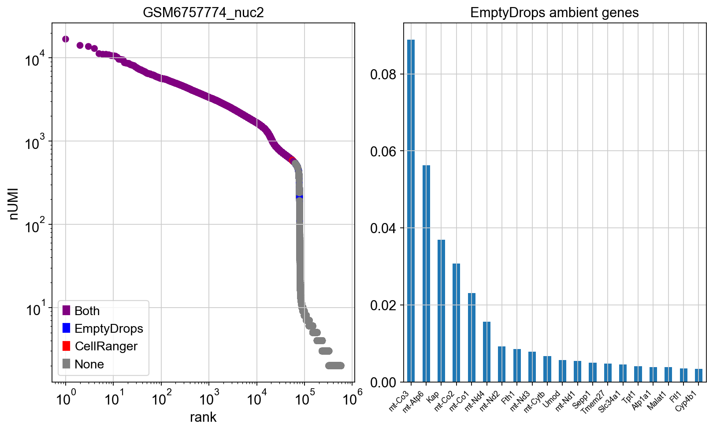
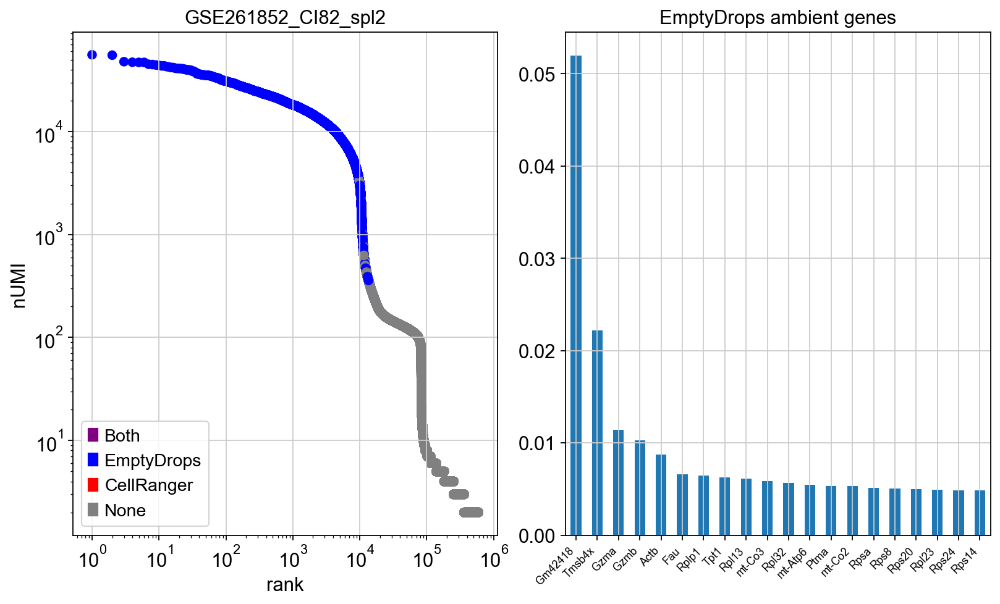

Code
import yaml
with open('./settings.yml', 'r') as f:
settings = yaml.load(f, Loader=yaml.SafeLoader)import yaml
with open('./settings.yml', 'r') as f:
settings = yaml.load(f, Loader=yaml.SafeLoader)Visualize all metadata:
import pandas as pd
import plotly.graph_objects as go
import os
allmeta = [settings['samples'][sample]['meta'] for sample in settings['samples'].keys()]
meta = pd.DataFrame.from_dict(allmeta)
meta.index = settings['samples'].keys()
meta['sample'] = meta.index
meta['idx'] = range(0,meta.shape[0])
dims = []
for var in meta.columns[:-2]:
dims.append(go.parcats.Dimension(values=meta[var], label=var, categoryorder='category ascending'))
fig = go.Figure(data = [go.Parcats(dimensions=[x for x in dims],
line={'color': meta.idx})])
# could not get the plotly to display, instead save as static image.
if not os.path.exists("images"):
os.mkdir("images")
fig.write_image("images/metadata.png") import os
resdir = settings['outdir']
if not os.path.exists(resdir):
os.makedirs(resdir)
#dropsdir = "/Users/asabjor/projects/sc-devop/scQC/data/mouse/output/emptydrops/"
#singlerdir = "/Users/asabjor/projects/sc-devop/scQC/data/mouse/output/singler/"
#
samples = list(settings['samples'].keys())
#["GSM6757771_rep1","GSM6757772_rep2","GSM6757773_rep3","GSM6757774_nuc2","GSM6757775_nuc3"]
for sample in samples:
sdir = os.path.join(resdir,sample)
if not os.path.exists(sdir):
os.makedirs(sdir)import gc
import numpy as np
import scanpy as sc
import warnings
import matplotlib.pyplot as plt
import matplotlib.patches as mpatches
import subprocess
import anndata
import seaborn as sns
from IPython.display import display, Markdown
warnings.simplefilter(action='ignore', category=Warning)
# verbosity: errors (0), warnings (1), info (2), hints (3)
sc.settings.verbosity = 3
sc.settings.set_figure_params(dpi=80)
%matplotlib inlinedef rotate_xticks(ax, size=8, rotation=45):
ax.set_xticklabels(ax.get_xticklabels(), rotation = rotation, size=size, ha='right') Run emptydrops for cell calling and ambient RNA estimation. Load the count matrices and also run SingleR for celltype assignment.
First run emptyDrops for each of the samples via an Rscript. Then load the csv files with cell predictions for plotting barcode rank plots and ambient signal.
Rscript= "/Users/asabjor/miniconda3/envs/rtools_scqc/bin/Rscript"
os.environ["R_HOME"] = "/Users/asabjor/miniconda3/envs/rtools_scqc/lib/R"
script = "/Users/asabjor/projects/sc-devop/scQC/source/all_qc/run_emptydrops.R"
dropletdata = {}
ambientgenes = {}
for sample in samples:
infile = settings['samples'][sample]['raw_file']
if not os.path.exists(infile):
print("No such file: ", infile)
os.sys.exit()
odir = os.path.join(resdir,sample,"emptydrops")
if not os.path.exists(odir):
os.makedirs(odir)
gene_file = os.path.join(odir,'gene_stats.csv')
cell_file = os.path.join(odir,'cell_stats.csv')
if (os.path.exists(gene_file) and os.path.exists(cell_file)) :
print("EmptyDrops done for "+sample)
else:
cmd = [Rscript, script, "-i", infile, "-o", odir]
print(cmd)
logfile = os.path.join(odir,"emptydrops.log")
with open(logfile,"w") as f:
subprocess.call(cmd, stdout=f)
stats = pd.read_csv(cell_file, index_col = 0)
stats = stats.loc[stats['Total']>0,:]
dropletdata[sample] = stats
ambientgenes[sample] = pd.read_csv(gene_file, index_col = 0)
print(sample+ " with "+ str(ambientgenes[sample].shape[0]) + " genes and " + str(stats.shape[0]) + " cells\n")EmptyDrops done for GSM6757771_rep1
GSM6757771_rep1 with 20607 genes and 688611 cells
EmptyDrops done for GSM6757772_rep2
GSM6757772_rep2 with 20701 genes and 880265 cells
EmptyDrops done for GSM6757773_rep3
GSM6757773_rep3 with 19321 genes and 324663 cells
EmptyDrops done for GSM6757774_nuc2
GSM6757774_nuc2 with 22906 genes and 577560 cells
EmptyDrops done for GSM6757775_nuc3
GSM6757775_nuc3 with 21841 genes and 604486 cells
EmptyDrops done for GSE261852_CI82_spl1
GSE261852_CI82_spl1 with 23996 genes and 729492 cells
EmptyDrops done for GSE261852_CI82_spl2
GSE261852_CI82_spl2 with 23469 genes and 594136 cells
EmptyDrops done for GSM6594872_SAM24349928
GSM6594872_SAM24349928 with 22684 genes and 118937 cells
EmptyDrops done for GSM6594883_SAM24374037
GSM6594883_SAM24374037 with 26367 genes and 184388 cells
If it is available, read in the filtered files from cellranger and store the list of barcodes.
cellranger_barcodes = {}
for sample in samples:
if 'filt_file' in settings['samples'][sample].keys() and settings['samples'][sample]['filt_file'] != None :
infile = settings['samples'][sample]['filt_file']
if os.path.exists(infile):
tmp = sc.read_10x_h5(infile)
cellranger_barcodes[sample] = tmp.obs_names
else:
print()
cellranger_barcodes[sample]=[]
else:
cellranger_barcodes[sample]=[]reading /Users/asabjor/projects/sc-devop/scQC/data/mouse/GSE218853/GSM6757771_rep1_filtered_feature_bc_matrix.h5
(0:00:01)
reading /Users/asabjor/projects/sc-devop/scQC/data/mouse/GSE218853/GSM6757772_rep2_filtered_feature_bc_matrix.h5
(0:00:01)
reading /Users/asabjor/projects/sc-devop/scQC/data/mouse/GSE218853/GSM6757773_rep3_filtered_feature_bc_matrix.h5
(0:00:00)
reading /Users/asabjor/projects/sc-devop/scQC/data/mouse/GSE218853/GSM6757774_nuc2_filtered_feature_bc_matrix.h5
(0:00:01)
reading /Users/asabjor/projects/sc-devop/scQC/data/mouse/GSE218853/GSM6757775_nuc3_filtered_feature_bc_matrix.h5
(0:00:00)
reading /Users/asabjor/projects/sc-devop/scQC/data/mouse/GSE213825/GSM6594872_SAM24349928_filtered_feature_bc_matrix.h5
(0:00:00)
reading /Users/asabjor/projects/sc-devop/scQC/data/mouse/GSE213825/GSM6594883_SAM24374037_filtered_feature_bc_matrix.h5
(0:00:00)For each sample, plot the barcode rank plots with predicted cells according to EmptyDrops and CellRanger (if available). Second plot shows the predicted ambient signal genes from emptyDrops. For each sample separately.
fdr_cut = 0.05
def plot_barcode_rank(sample):
stats = dropletdata[sample]
stats["rank"] = stats['Total'].rank(method='first', ascending = False)
stats["isCell"] = stats["FDR"] <= fdr_cut
stats["isCellCR"] = dropletdata[sample].index.isin(cellranger_barcodes[sample])
print("EmptyDrops cell prediction: ", str(stats["isCell"].sum()))
print(" lowest nUMI: ", str(stats.Total[stats.isCell].min()), "\n")
print("Cellranger cell prediction: " + str(stats["isCellCR"].sum()))
print(" lowest nUMI: ", str(stats.Total[stats.isCellCR].min()), "\n")
stats["color"] = "Grey"
stats["color"][stats.isCell] = "Blue"
stats["color"][stats.isCellCR] = "Red"
stats["color"][stats.isCell & stats.isCellCR] = "Purple"
clegend = [mpatches.Patch(color='Purple', label='Both'),
mpatches.Patch(color='Blue', label='EmptyDrops'),
mpatches.Patch(color='Red', label='CellRanger'),
mpatches.Patch(color='Grey', label='None')
]
print("Intersection cell prediction:", str((stats['color'] =="Purple").sum()))
fig, axs = plt.subplots(1, 2, figsize=(10,6),constrained_layout=True)
axs[0].scatter(stats["rank"], stats['Total'], c=stats['color'])
axs[0].set_xscale("log")
axs[0].set_yscale("log")
axs[0].set_xlabel("rank")
axs[0].set_ylabel("nUMI")
axs[0].title.set_text(sample)
axs[0].legend(handles=clegend,
loc='lower left')
gstats = ambientgenes[sample]
topA = gstats['ambient'].sort_values(ascending=False).head(20).index
gstats['ambient'][topA].plot.bar(ax=axs[1])
axs[1].title.set_text("EmptyDrops ambient genes")
rotate_xticks(axs[1])FIX! Order of barplot for ambient is different to the violins.
EmptyDrops cell prediction: 73360 lowest nUMI: 101
Cellranger cell prediction: 21819 lowest nUMI: 528
Intersection cell prediction: 21819
EmptyDrops cell prediction: 87078 lowest nUMI: 101
Cellranger cell prediction: 28187 lowest nUMI: 1090
Intersection cell prediction: 28187
EmptyDrops cell prediction: 74869 lowest nUMI: 101
Cellranger cell prediction: 6546 lowest nUMI: 500
Intersection cell prediction: 6546
EmptyDrops cell prediction: 58172 lowest nUMI: 101
Cellranger cell prediction: 59249 lowest nUMI: 500
Intersection cell prediction: 55909 
EmptyDrops cell prediction: 79352 lowest nUMI: 101
Cellranger cell prediction: 20129 lowest nUMI: 569
Intersection cell prediction: 20129
EmptyDrops cell prediction: 32903 lowest nUMI: 101
Cellranger cell prediction: 0 lowest nUMI: nan
Intersection cell prediction: 0
EmptyDrops cell prediction: 12063 lowest nUMI: 101
Cellranger cell prediction: 0 lowest nUMI: nan
Intersection cell prediction: 0 
EmptyDrops cell prediction: 1178 lowest nUMI: 101
Cellranger cell prediction: 1220 lowest nUMI: 500
Intersection cell prediction: 971
EmptyDrops cell prediction: 7084 lowest nUMI: 101
Cellranger cell prediction: 7495 lowest nUMI: 500
Intersection cell prediction: 6018
Use cutoff for the emptyDrops predictions to filter the cells in the raw matrices and create one merged dataset with all samples.
metadata_all = {}
alldata = {}
for sample in samples:
infile = settings['samples'][sample]['raw_file']
adata_raw = sc.read_10x_h5(infile)
adata_raw.var_names_make_unique()
print(sample+ " with "+ str(adata_raw.n_vars) + " genes and " + str(adata_raw.n_obs) + " cells\n")
adata_raw.obs["sample"] = sample
for (k,v) in settings['samples'][sample]['meta'].items():
adata_raw.obs[k] = v
metadata_all[k] = 1
# adata_raw.obs["type"] = sample.split("_")[1]
# filter for predicted cells
select = dropletdata[sample]['isCell']
cell_idx = select.index[select]
adata_raw = adata_raw[cell_idx,:]
# save gene info from ambient in .var
gdata = ambientgenes[sample]
adata_raw.var['ambient'] = np.nan
adata_raw.var['ambient'][adata_raw.var.index.isin(gdata.index)] = gdata['ambient']
print("After filtering " + str(adata_raw.n_obs) + " cells\n")
alldata[sample]=adata_rawreading /Users/asabjor/projects/sc-devop/scQC/data/mouse/GSE218853/GSM6757771_rep1_raw_feature_bc_matrix.h5
(0:00:06)
GSM6757771_rep1 with 28692 genes and 6794880 cells
After filtering 73360 cells
reading /Users/asabjor/projects/sc-devop/scQC/data/mouse/GSE218853/GSM6757772_rep2_raw_feature_bc_matrix.h5
(0:00:06)
GSM6757772_rep2 with 28692 genes and 6794880 cells
After filtering 87078 cells
reading /Users/asabjor/projects/sc-devop/scQC/data/mouse/GSE218853/GSM6757773_rep3_raw_feature_bc_matrix.h5
(0:00:05)
GSM6757773_rep3 with 28692 genes and 6794880 cells
After filtering 74869 cells
reading /Users/asabjor/projects/sc-devop/scQC/data/mouse/GSE218853/GSM6757774_nuc2_raw_feature_bc_matrix.h5
(0:00:06)
GSM6757774_nuc2 with 28692 genes and 6794880 cells
After filtering 58172 cells
reading /Users/asabjor/projects/sc-devop/scQC/data/mouse/GSE218853/GSM6757775_nuc3_raw_feature_bc_matrix.h5
(0:00:06)
GSM6757775_nuc3 with 28692 genes and 6794880 cells
After filtering 79352 cells
reading /Users/asabjor/projects/sc-devop/scQC/data/mouse/GSE261852/GSE261852_CI82_spl1_raw_feature_bc_matrix.h5
(0:00:02)
GSE261852_CI82_spl1 with 32285 genes and 2106361 cells
After filtering 32903 cells
reading /Users/asabjor/projects/sc-devop/scQC/data/mouse/GSE261852/GSE261852_CI82_spl2_raw_feature_bc_matrix.h5
(0:00:02)
GSE261852_CI82_spl2 with 32285 genes and 1871599 cells
After filtering 12063 cells
reading /Users/asabjor/projects/sc-devop/scQC/data/mouse/GSE213825/GSM6594872_SAM24349928_raw_feature_bc_matrix.h5
(0:00:00)
GSM6594872_SAM24349928 with 52636 genes and 737280 cells
After filtering 1178 cells
reading /Users/asabjor/projects/sc-devop/scQC/data/mouse/GSE213825/GSM6594883_SAM24374037_raw_feature_bc_matrix.h5
(0:00:06)
GSM6594883_SAM24374037 with 52636 genes and 6794880 cells
After filtering 7084 cells
Run for one sample at a time using a braod reference. Only found such ref for singleR, so run with an Rscript.
Add the predictions to adata.var
Rscript= "/Users/asabjor/miniconda3/envs/rtools_scqc/bin/Rscript"
os.environ["R_HOME"] = "/Users/asabjor/miniconda3/envs/rtools_scqc/lib/R"
script = "/Users/asabjor/projects/sc-devop/scQC/source/all_qc/run_singleR.R"
for sample in samples:
infile = settings['samples'][sample]['raw_file']
dropsfile = os.path.join(resdir,sample,'emptydrops','cell_stats.csv')
outfile = os.path.join(resdir,sample, sample + '_singler.csv')
if (os.path.exists(outfile)) :
print("SingleR done for "+sample)
else:
cmd = [Rscript, script, "-i", infile, "-o", outfile, "-d", dropsfile, "-s", "mouse"]
print(cmd)
logfile = os.path.join(resdir,sample, sample + "_singler.log")
with open(logfile,"w") as f:
subprocess.call(cmd, stdout=f)
stats = pd.read_csv(outfile, index_col = 0)
alldata[sample].obs = pd.concat([alldata[sample].obs,stats], axis=1)SingleR done for GSM6757771_rep1
SingleR done for GSM6757772_rep2
SingleR done for GSM6757773_rep3
SingleR done for GSM6757774_nuc2
SingleR done for GSM6757775_nuc3
SingleR done for GSE261852_CI82_spl1
SingleR done for GSE261852_CI82_spl2
SingleR done for GSM6594872_SAM24349928
SingleR done for GSM6594883_SAM24374037# Stats on proportions per sample. List top 10 celltypes.
ct_stats = {}
for sample in samples:
ct_stats[sample] = alldata[sample].obs['pruned.labels'].value_counts(normalize=True)
ct_stats = pd.concat(ct_stats.values(), axis=1)
ct_stats.columns = samples
# order by mean
ct_stats['mean'] = ct_stats.mean(axis=1)
ct_stats = ct_stats.sort_values(by="mean", ascending=False)
print(ct_stats) GSM6757771_rep1 GSM6757772_rep2 GSM6757773_rep3 \
Hepatocytes 0.198260 0.245940 0.220474
Adipocytes 0.291781 0.290569 0.235835
T cells 0.006476 0.001964 0.007841
Epithelial cells 0.315597 0.333509 0.325755
Neurons 0.006885 0.001688 0.010138
Endothelial cells 0.086786 0.081804 0.080784
Fibroblasts 0.012556 0.009371 0.011541
NK cells 0.000286 0.000459 0.000094
Oligodendrocytes 0.000982 0.000172 0.003206
Monocytes 0.042711 0.020144 0.055152
Cardiomyocytes 0.014287 0.003859 0.022520
Astrocytes NaN 0.000011 0.000053
Macrophages 0.008071 0.005788 0.006679
Erythrocytes 0.012542 0.003204 0.017137
Granulocytes 0.000286 0.000057 0.000321
B cells 0.002208 0.001436 0.001883
Dendritic cells 0.000082 0.000023 0.000094
Microglia 0.000204 NaN 0.000494
GSM6757774_nuc2 GSM6757775_nuc3 GSE261852_CI82_spl1 \
Hepatocytes 0.232832 0.375154 NaN
Adipocytes 0.571112 0.377070 NaN
T cells 0.000052 0.000517 0.831834
Epithelial cells 0.117568 0.162756 NaN
Neurons 0.003456 0.002231 0.000030
Endothelial cells 0.034112 0.023668 0.000304
Fibroblasts 0.005897 0.007121 0.000030
NK cells 0.000034 0.000013 0.163486
Oligodendrocytes 0.005192 0.005268 NaN
Monocytes 0.000378 0.004499 NaN
Cardiomyocytes 0.012947 0.030197 NaN
Astrocytes 0.014838 0.002634 NaN
Macrophages 0.000946 0.003277 0.000061
Erythrocytes 0.000344 0.004802 0.000061
Granulocytes NaN 0.000076 NaN
B cells 0.000052 0.000429 0.001641
Dendritic cells 0.000052 0.000063 0.002523
Microglia 0.000189 0.000227 0.000030
GSE261852_CI82_spl2 GSM6594872_SAM24349928 \
Hepatocytes NaN NaN
Adipocytes NaN 0.008496
T cells 0.971704 0.004248
Epithelial cells NaN 0.048428
Neurons 0.000090 0.613424
Endothelial cells NaN 0.086661
Fibroblasts 0.000180 0.105353
NK cells 0.024151 0.001699
Oligodendrocytes NaN 0.062022
Monocytes 0.000090 0.010195
Cardiomyocytes NaN 0.000850
Astrocytes NaN 0.028887
Macrophages 0.000180 0.022940
Erythrocytes 0.000180 0.001699
Granulocytes NaN 0.001699
B cells 0.002703 0.001699
Dendritic cells 0.000631 0.000850
Microglia 0.000090 0.000850
GSM6594883_SAM24374037 mean
Hepatocytes NaN 0.254532
Adipocytes 0.002542 0.253915
T cells 0.000706 0.202816
Epithelial cells 0.027401 0.190145
Neurons 0.673870 0.145757
Endothelial cells 0.138559 0.066585
Fibroblasts 0.051130 0.022575
NK cells 0.000989 0.021246
Oligodendrocytes 0.046610 0.017636
Monocytes 0.002542 0.016964
Cardiomyocytes NaN 0.014110
Astrocytes 0.034605 0.013505
Macrophages 0.010028 0.006441
Erythrocytes 0.001836 0.004645
Granulocytes 0.007203 0.001607
B cells 0.001977 0.001559
Dendritic cells NaN 0.000539
Microglia NaN 0.000298 Barplot for top 10 categories
ct_stats.head(10).T.plot.bar(stacked=True).legend(loc='center left',bbox_to_anchor=(1.0, 0.5));Create one adata object from all samples
# anndata.concat works to merge the data, But selects the intersection of genes across the datasets.
adata = anndata.concat(alldata)
adata.var = alldata[samples[0]].var[alldata[samples[0]].var_names.isin(adata.var_names)]
adata.obs_names_make_unique() # in case of same barcode in 2 samples
del alldata
del ambientgenes
del dropletdata
del cellranger_barcodes
gc.collect(generation=2)
print(adata.shape)
adata.obs['sample'].value_counts()(426059, 26634)GSM6757772_rep2 87078
GSM6757775_nuc3 79352
GSM6757773_rep3 74869
GSM6757771_rep1 73360
GSM6757774_nuc2 58172
GSE261852_CI82_spl1 32903
GSE261852_CI82_spl2 12063
GSM6594883_SAM24374037 7084
GSM6594872_SAM24349928 1178
Name: sample, dtype: int64First, read in the annotation file for biotypes.
Make broader groupings:
indir = "/Users/asabjor/projects/sc-devop/scQC/data/mouse"
annot_file = os.path.join(resdir, "mouse_annotation.csv")
if os.path.exists(annot_file):
annot = pd.read_csv(annot_file, index_col=0)
else:
annot = sc.queries.biomart_annotations("mmusculus", ["ensembl_gene_id", "external_gene_name", "start_position", "end_position", "chromosome_name", "gene_biotype"] )
annot.to_csv(annot_file)
# make slim biotype
annot["gene_class"]= "other"
pc_genes = ["protein_coding","IG_V_gene","IG_D_gene","IG_J_gene","IG_C_gene","IG_LV_gene", "TR_V_gene","TR_J_gene","TR_C_gene","TR_D_gene" ]
annot["gene_class"][annot.gene_biotype.isin(pc_genes)] = "pc"
annot["gene_class"][annot.gene_biotype == "lncRNA"] = "lncRNA"
annot["gene_class"][annot.external_gene_name.str.startswith('mt-').fillna(False)] = "mt"## add into .var of the object
t = adata.var.merge(annot, left_on="gene_ids", right_on="ensembl_gene_id", how='left')
t.index = adata.var.index
t.gene_class[t.gene_class.isna()] = "other"
adata.var = t
# add in the biotypes as own columns in adata.var
gene_classes = ['pc','lncRNA','mt','other']
for cl in gene_classes:
adata.var[cl]=adata.var['gene_class'] == clFirst calculate percantage mito, then remove mito genes and calculate the rest.
# Add in also some more gene groups. Ribo, HB
# ribosomal genes
adata.var['ribo'] = adata.var_names.str.startswith(("Rps","Rpl"))
# hemoglobin genes.
adata.var['hb'] = adata.var_names.str.contains(("^Hb[^(p|e|s)]"))
sc.pp.calculate_qc_metrics(adata, qc_vars=['mt'], percent_top=None, log1p=False, inplace=True)
adata = adata[:,~adata.var['mt']]
sc.pp.calculate_qc_metrics(adata, qc_vars=['ribo','hb','pc','lncRNA','ribo','other'], percent_top=None, log1p=False, inplace=True)Violin plots with different metadata groupings, always include sample and top celltypes, but also add in any other metadata found in the metadata field of the settings.yml.
# fix top10 celltype and "other" annotation
topC = ct_stats.head(10).index.tolist()
adata.obs["topCelltype"] = adata.obs['pruned.labels'].copy()
adata.obs['topCelltype'][~adata.obs['pruned.labels'].isin(topC)] = "Other"
plot_vln_meta = ["sample","topCelltype"] + list(metadata_all.keys())
plot_stats = ['n_genes_by_counts', 'total_counts', 'pct_counts_mt', 'pct_counts_ribo', 'pct_counts_hb', 'pct_counts_pc', 'pct_counts_lncRNA', 'pct_counts_other']
def plot_qc_vln(meta_slot):
fig, axs = plt.subplots(3, 3, figsize=(10,10),constrained_layout=True)
for stat, ax in zip(plot_stats, axs.flatten()):
sc.pl.violin(adata, stat, groupby = meta_slot, jitter=0.4, size = 0.1, ax=ax, show=False )
rotate_xticks(ax)
ax.title.set_text(stat)Scatter plots
fig, axs = plt.subplots(1, 2, figsize=(10,5),constrained_layout=True)
sc.pl.scatter(adata, x='total_counts', y='pct_counts_mt', color='sample', ax=axs[0],show=False)
axs[0].set_xscale("log")
sc.pl.scatter(adata, x='total_counts', y='n_genes_by_counts', color='sample', ax=axs[1],show=False)
axs[1].set_xscale("log")
axs[1].set_yscale("log")Filter for now on:
Later, make it adatptive for multiple different qc stats selected.
For now, have options:
Have as default setting for now:
filtering:
n_genes_by_counts: ['fixed',200,'below']
pct_counts_mt': ['adaptive',2,'above']
pct_counts_pc': ['adaptive',2,'below']Plot violins for each stat with:
filter_batch = 'sample'
if 'filter_batch' in settings['filtering'].keys():
filter_batch = settings['filtering']['filter_batch']
# default settings for filtering if not provided in the
filter_settings = settings['filtering']['cutoffs']
# group the stats by selected bathch and qc-stats.
sel = list(set([x[0] for x in filter_settings]))
sel.append(filter_batch)
sample_stats = adata.obs.loc[:,sel].groupby(filter_batch)
# calculate mean/median per sample
median = sample_stats.median()
mad = sample_stats.mad()
cells_remove = []
filtered = {}
for i in range(len(filter_settings)):
[st, kind, cut, direction] = filter_settings[i]
# define the cutoffs
cutoff = {}
if kind == 'fixed':
for sample in samples:
cutoff[sample] = cut
print("Filtering " + st + " for all cells " + direction + " cutoff " + str(cut))
elif kind == 'adaptive':
if direction == 'below':
for sample in samples:
cutoff[sample] = median.loc[sample,st] - mad.loc[sample,st] * cut
print("Filtering " + st + " for "+ sample + " below cutoff " + str(cutoff[sample]))
elif direction == 'above':
for sample in samples:
cutoff[sample] = median.loc[sample,st] + mad.loc[sample,st] * cut
print("Filtering " + st + " for "+ sample + " above cutoff " + str(cutoff[sample]))
else:
print("unknown direction type " + direction + "skipping\n")
continue
else:
print("unknown filtering type " + kind + "skipping\n")
continue
# plot
fig, axs = plt.subplots(1, 2, figsize=(10,6),constrained_layout=True)
sc.pl.violin(adata, st, groupby = 'sample', jitter=0.4, rotation= 45, size = 0.1, show = False, ax = axs[0])
for (idx,sample) in enumerate(adata.obs['sample'].cat.categories):
me = median.loc[sample,st]
ma = mad.loc[sample,st]
axs[0].hlines(me,idx-0.5,idx+0.5, linewidth=2, color = 'black')
axs[0].hlines(me+ma*1,idx-0.5,idx+0.5, linewidth=2, linestyles = 'dotted', color = 'black')
axs[0].hlines(me-ma*1,idx-0.5,idx+0.5, linewidth=2, linestyles = 'dotted', color = 'black')
axs[0].hlines(me+ma*2,idx-0.5,idx+0.5, linewidth=2, linestyles = 'dotted', color = 'black')
axs[0].hlines(me-ma*2,idx-0.5,idx+0.5, linewidth=2, linestyles = 'dotted', color = 'black')
axs[0].hlines(me+ma*3,idx-0.5,idx+0.5, linewidth=2, linestyles = 'dotted', color = 'black')
axs[0].hlines(me-ma*3,idx-0.5,idx+0.5, linewidth=2, linestyles = 'dotted', color = 'black')
axs[0].hlines(cutoff[sample],idx-0.5,idx+0.5, linewidth=4, color = 'red')
axs[0].title.set_text(st)
rotate_xticks(axs[0])
# save the filtered cells to a list
if direction == 'below':
for sample in samples:
filtered[sample] = (adata.obs[st] <= cutoff[sample])[adata.obs['sample']==sample]
elif direction == 'above':
for sample in samples:
filtered[sample] = (adata.obs[st] >= cutoff[sample])[adata.obs['sample']==sample]
for sample in samples:
cells_remove.extend(list(filtered[sample].index[filtered[sample]]) )
fstats = pd.Series([filtered[sample].sum()/filtered[sample].shape[0]*100 for sample in adata.obs['sample'].cat.categories], index= adata.obs['sample'].cat.categories)
#fstats = pd.Series([ filtered['sample'].value_counts(normalize=True)[1] * 100 for sample in samples], index = samples)
# OBS! Value counts does not work when all are False!!
fstats.plot.bar(ax=axs[1])
axs[1].title.set_text("Percent filtered cells")
rotate_xticks(axs[1])Filtering n_genes_by_counts for all cells below cutoff 200
Filtering n_genes_by_counts for GSM6757771_rep1 above cutoff 1821.0341322933225
Filtering n_genes_by_counts for GSM6757772_rep2 above cutoff 1890.2704776371947
Filtering n_genes_by_counts for GSM6757773_rep3 above cutoff 922.7472199564627
Filtering n_genes_by_counts for GSM6757774_nuc2 above cutoff 1385.1673130234149
Filtering n_genes_by_counts for GSM6757775_nuc3 above cutoff 974.9002867074753
Filtering n_genes_by_counts for GSE261852_CI82_spl1 above cutoff 3978.409733126997
Filtering n_genes_by_counts for GSE261852_CI82_spl2 above cutoff 5338.786504524462
Filtering n_genes_by_counts for GSM6594872_SAM24349928 above cutoff 6387.447513987334
Filtering n_genes_by_counts for GSM6594883_SAM24374037 above cutoff 5569.229489571141
Filtering pct_counts_mt for GSM6757771_rep1 above cutoff 80.62651050403437
Filtering pct_counts_mt for GSM6757772_rep2 above cutoff 70.7941143695952
Filtering pct_counts_mt for GSM6757773_rep3 above cutoff 80.6863892830159
Filtering pct_counts_mt for GSM6757774_nuc2 above cutoff 40.23891029658003
Filtering pct_counts_mt for GSM6757775_nuc3 above cutoff 53.4054513591073
Filtering pct_counts_mt for GSE261852_CI82_spl1 above cutoff 5.203391537226236
Filtering pct_counts_mt for GSE261852_CI82_spl2 above cutoff 8.117819659778089
Filtering pct_counts_mt for GSM6594872_SAM24349928 above cutoff 7.973089946316893
Filtering pct_counts_mt for GSM6594883_SAM24374037 above cutoff 5.653369847161591
Filtering pct_counts_pc for GSM6757771_rep1 below cutoff 96.1730951334164
Filtering pct_counts_pc for GSM6757772_rep2 below cutoff 97.28505772989486
Filtering pct_counts_pc for GSM6757773_rep3 below cutoff 96.62621415370113
Filtering pct_counts_pc for GSM6757774_nuc2 below cutoff 94.75338305153512
Filtering pct_counts_pc for GSM6757775_nuc3 below cutoff 97.14835136798928
Filtering pct_counts_pc for GSE261852_CI82_spl1 below cutoff 64.79189417193597
Filtering pct_counts_pc for GSE261852_CI82_spl2 below cutoff 92.71003399576742
Filtering pct_counts_pc for GSM6594872_SAM24349928 below cutoff 87.50377133665748
Filtering pct_counts_pc for GSM6594883_SAM24374037 below cutoff 94.1454663160896# do the final filtering
before = adata.obs['sample'].value_counts()
adata = adata[~adata.obs_names.isin(cells_remove),:]
after = adata.obs['sample'].value_counts()
stats = pd.concat([before,after], axis=1 )
stats.columns = ['Before','After']
stats['Percentage'] = (stats.Before-stats.After)/stats.Before * 100
gc.collect()
print(stats) Before After Percentage
GSM6757772_rep2 87078 66260 23.907301
GSM6757775_nuc3 79352 46087 41.920809
GSM6757773_rep3 74869 3700 95.058035
GSM6757771_rep1 73360 16252 77.846238
GSM6757774_nuc2 58172 48674 16.327443
GSE261852_CI82_spl1 32903 11635 64.638483
GSE261852_CI82_spl2 12063 10303 14.590069
GSM6594883_SAM24374037 7084 5551 21.640316
GSM6594872_SAM24349928 1178 793 32.682513FIX! Plot each filtering as tabset!
FIX! Order of the samples in violin and barplot should be the same.
fig, axs = plt.subplots(3, 3, figsize=(10,10),constrained_layout=True)
for sample, ax in zip(samples, axs.flatten()):
sc.pl.highest_expr_genes(adata[adata.obs['sample']==sample,:], n_top=20, ax=ax, show=False)
ax.title.set_text(sample) normalizing counts per cell
finished (0:00:00)
normalizing counts per cell
finished (0:00:00)
normalizing counts per cell
finished (0:00:00)
normalizing counts per cell
finished (0:00:00)
normalizing counts per cell
finished (0:00:00)
normalizing counts per cell
finished (0:00:00)
normalizing counts per cell
finished (0:00:00)
normalizing counts per cell
finished (0:00:00)
normalizing counts per cell
finished (0:00:00)FIX! Dynamic number of subpltos each filtering as tabset!
OBS! Now removing mito genes already earlier..
print(adata.n_vars)
malat1 = adata.var_names.str.startswith('Malat1')
# we need to redefine the mito_genes since they were first
# calculated on the full object before removing low expressed genes.
mito_genes = adata.var_names.str.startswith('mt-')
remove = np.add(mito_genes, malat1)
keep = np.invert(remove)
adata = adata[:,keep]
print(adata.n_vars)26621
26620Plot again the celltypes after filtering
# Stats on proportions per sample. List top 10 celltypes.
ct_stats2 = {}
for sample in samples:
ct_stats2[sample] = adata[adata.obs['sample'] == sample,:].obs['pruned.labels'].value_counts(normalize=True)
ct_stats2 = pd.concat(ct_stats2.values(), axis=1)
ct_stats2.columns = samples
# order by mean
ct_stats2['mean'] = ct_stats2.mean(axis=1)
ct_stats2 = ct_stats2.sort_values(by="mean", ascending=False)
print(ct_stats2) GSM6757771_rep1 GSM6757772_rep2 GSM6757773_rep3 \
Adipocytes 0.352677 0.267942 0.260541
Hepatocytes 0.192862 0.266085 0.210000
T cells 0.005169 0.001675 0.002432
Epithelial cells 0.301846 0.348748 0.389730
Neurons 0.002831 0.001479 0.006216
Endothelial cells 0.077538 0.075132 0.071351
Fibroblasts 0.014646 0.003803 0.012162
Astrocytes NaN NaN NaN
Oligodendrocytes 0.000431 0.000075 NaN
Cardiomyocytes 0.007015 0.003290 0.013784
Monocytes 0.018523 0.021809 0.014865
Macrophages 0.017108 0.004739 0.009730
NK cells 0.000738 0.000332 NaN
Erythrocytes 0.004369 0.003502 0.006216
Granulocytes 0.000615 0.000015 0.001081
B cells 0.003569 0.001373 0.001892
Microglia NaN NaN NaN
Dendritic cells 0.000062 NaN NaN
GSM6757774_nuc2 GSM6757775_nuc3 GSE261852_CI82_spl1 \
Adipocytes 0.571464 0.398346 NaN
Hepatocytes 0.244349 0.407482 NaN
T cells 0.000041 0.000130 0.977568
Epithelial cells 0.111079 0.139900 NaN
Neurons 0.002610 0.001085 NaN
Endothelial cells 0.034848 0.016817 NaN
Fibroblasts 0.005979 0.003906 NaN
Astrocytes 0.008568 0.000521 NaN
Oligodendrocytes 0.004603 0.003060 NaN
Cardiomyocytes 0.014260 0.022329 NaN
Monocytes 0.000431 0.002018 NaN
Macrophages 0.001068 0.001497 NaN
NK cells 0.000041 NaN 0.021401
Erythrocytes 0.000411 0.002669 NaN
Granulocytes NaN 0.000022 NaN
B cells 0.000041 0.000130 0.000774
Microglia 0.000144 0.000065 0.000086
Dendritic cells 0.000062 0.000022 0.000172
GSE261852_CI82_spl2 GSM6594872_SAM24349928 \
Adipocytes NaN 0.003783
Hepatocytes NaN NaN
T cells 0.997461 0.005044
Epithelial cells NaN 0.051702
Neurons NaN 0.659521
Endothelial cells NaN 0.094578
Fibroblasts 0.000098 0.074401
Astrocytes NaN 0.027743
Oligodendrocytes NaN 0.047919
Cardiomyocytes NaN NaN
Monocytes NaN 0.006305
Macrophages 0.000098 0.025221
NK cells 0.000684 0.001261
Erythrocytes 0.000195 NaN
Granulocytes NaN 0.002522
B cells 0.001465 NaN
Microglia NaN NaN
Dendritic cells NaN NaN
GSM6594883_SAM24374037 mean
Adipocytes 0.002883 0.265376
Hepatocytes NaN 0.264156
T cells 0.000541 0.221118
Epithelial cells 0.029369 0.196054
Neurons 0.646126 0.188553
Endothelial cells 0.160360 0.075804
Fibroblasts 0.051712 0.020838
Astrocytes 0.034414 0.017812
Oligodendrocytes 0.044865 0.016825
Cardiomyocytes NaN 0.012136
Monocytes 0.002703 0.009522
Macrophages 0.012252 0.008964
NK cells 0.000901 0.003623
Erythrocytes 0.002342 0.002815
Granulocytes 0.009009 0.002211
B cells 0.002523 0.001471
Microglia NaN 0.000098
Dendritic cells NaN 0.000079 Barplot for top 10 categories
Need to add in specific function per species.
First read the file with cell cycle genes, from Regev lab and split into S and G2M phase genes. We first download the file.
path_data = "https://nextcloud.dc.scilifelab.se/public.php/webdav"
curl_upass = "zbC5fr2LbEZ9rSE:scRNAseq2025"
path_cc_file = os.path.join(indir, 'regev_lab_cell_cycle_genes.txt')
if not os.path.exists(path_cc_file):
file_url = os.path.join(path_data, "misc/regev_lab_cell_cycle_genes.txt")
subprocess.call(["curl", "-u", curl_upass, "-o", path_cc_file, file_url ])cell_cycle_genes = [x.strip() for x in open(path_cc_file)]
# convert to mouse names if needed
def convert2mousegene(hgenes):
hgenes = [s.lower() for s in hgenes]
trans = adata.var_names[adata.var_names.str.lower().isin(hgenes)]
print("Translated ", str(len(trans)), " out of ", len(hgenes), "human genes\n")
return(trans)
if settings['species'] == 'mouse':
s_genes = convert2mousegene(cell_cycle_genes[:43])
g2m_genes = convert2mousegene(cell_cycle_genes[43:])Translated 42 out of 43 human genes
Translated 52 out of 54 human genes
WARNING: genes are not in var_names and ignored: Index([Mlf1Ip, Rad51Ap1, Casp8Ap2, Chaf1B, E2F8], dtype=object) finished: added S_score, score of gene set (adata.obs). 386 total control genes are used. (0:00:04) computing score G2M_score WARNING: genes are not in var_names and ignored: Index([Ube2C, Top2A, Cks1B, Fam64A, Ckap2L, Anp32E, Tubb4B, Kif20B, Hn1, Cdc25C, Kif2C, G2E3, Gas2L3],
Before running cell cycle we have to normalize the data. In the scanpy object, the data slot will be overwritten with the normalized data. So first, save the raw data into the slot raw. Then run normalization, log transformation and scale the data.
# save raw counts in raw slot.
adata.raw = adata
# normalize to depth 10 000
sc.pp.normalize_total(adata, target_sum=1e4)
# logaritmize
sc.pp.log1p(adata)
# want the unscaled data for later. so scale in a temporary object.
tmp = adata.copy()
sc.pp.scale(tmp)normalizing counts per cell
finished (0:00:00)
... as `zero_center=True`, sparse input is densified and may lead to large memory consumptionFor comparison, run CC prediction with all samples together or each sample separately and compare output.
sc.tl.score_genes_cell_cycle(tmp, s_genes=s_genes, g2m_genes=g2m_genes)
adata.obs['S_score'] = tmp.obs['S_score']
adata.obs['G2M_score'] = tmp.obs['G2M_score']
adata.obs['phase'] = tmp.obs['phase']calculating cell cycle phase
computing score 'S_score'
finished: added
'S_score', score of gene set (adata.obs).
335 total control genes are used. (0:00:01)
computing score 'G2M_score'
finished: added
'G2M_score', score of gene set (adata.obs).
544 total control genes are used. (0:00:01)
--> 'phase', cell cycle phase (adata.obs)cc_scores = {}
for sample in samples:
cc = sc.tl.score_genes_cell_cycle(tmp[tmp.obs['sample']==sample], s_genes=s_genes, g2m_genes=g2m_genes, copy=True)
cc_scores[sample]=cc.obs.iloc[:,-3:]
cc_scores = pd.concat(cc_scores)
cc_scores = cc_scores.reset_index(level=[0])
#cc_scores.index.get_level_values(1)
adata.obs['S_score2'] = cc_scores['S_score']
adata.obs['G2M_score2'] = cc_scores['G2M_score']
adata.obs['phase2'] = cc_scores['phase']calculating cell cycle phase
computing score 'S_score'
finished: added
'S_score', score of gene set (adata.obs).
462 total control genes are used. (0:00:00)
computing score 'G2M_score'
finished: added
'G2M_score', score of gene set (adata.obs).
585 total control genes are used. (0:00:00)
--> 'phase', cell cycle phase (adata.obs)
calculating cell cycle phase
computing score 'S_score'
finished: added
'S_score', score of gene set (adata.obs).
545 total control genes are used. (0:00:00)
computing score 'G2M_score'
finished: added
'G2M_score', score of gene set (adata.obs).
586 total control genes are used. (0:00:00)
--> 'phase', cell cycle phase (adata.obs)
calculating cell cycle phase
computing score 'S_score'
finished: added
'S_score', score of gene set (adata.obs).
460 total control genes are used. (0:00:00)
computing score 'G2M_score'
finished: added
'G2M_score', score of gene set (adata.obs).
543 total control genes are used. (0:00:00)
--> 'phase', cell cycle phase (adata.obs)
calculating cell cycle phase
computing score 'S_score'
finished: added
'S_score', score of gene set (adata.obs).
458 total control genes are used. (0:00:00)
computing score 'G2M_score'
finished: added
'G2M_score', score of gene set (adata.obs).
587 total control genes are used. (0:00:00)
--> 'phase', cell cycle phase (adata.obs)
calculating cell cycle phase
computing score 'S_score'
finished: added
'S_score', score of gene set (adata.obs).
461 total control genes are used. (0:00:00)
computing score 'G2M_score'
finished: added
'G2M_score', score of gene set (adata.obs).
629 total control genes are used. (0:00:00)
--> 'phase', cell cycle phase (adata.obs)
calculating cell cycle phase
computing score 'S_score'
finished: added
'S_score', score of gene set (adata.obs).
294 total control genes are used. (0:00:00)
computing score 'G2M_score'
finished: added
'G2M_score', score of gene set (adata.obs).
375 total control genes are used. (0:00:00)
--> 'phase', cell cycle phase (adata.obs)
calculating cell cycle phase
computing score 'S_score'
finished: added
'S_score', score of gene set (adata.obs).
294 total control genes are used. (0:00:00)
computing score 'G2M_score'
finished: added
'G2M_score', score of gene set (adata.obs).
334 total control genes are used. (0:00:00)
--> 'phase', cell cycle phase (adata.obs)
calculating cell cycle phase
computing score 'S_score'
finished: added
'S_score', score of gene set (adata.obs).
503 total control genes are used. (0:00:00)
computing score 'G2M_score'
finished: added
'G2M_score', score of gene set (adata.obs).
585 total control genes are used. (0:00:00)
--> 'phase', cell cycle phase (adata.obs)
calculating cell cycle phase
computing score 'S_score'
finished: added
'S_score', score of gene set (adata.obs).
504 total control genes are used. (0:00:00)
computing score 'G2M_score'
finished: added
'G2M_score', score of gene set (adata.obs).
545 total control genes are used. (0:00:00)
--> 'phase', cell cycle phase (adata.obs)del tmp
gc.collect()18923%matplotlib inline
fig, axs = plt.subplots(1, 3, figsize=(10,6),constrained_layout=True)
sc.pl.violin(adata, ['S_score'] , jitter=0.4, groupby = 'sample', ax=axs[0], show=False)
rotate_xticks(axs[0])
sc.pl.violin(adata, ['G2M_score'] , jitter=0.4, groupby = 'sample', ax=axs[1], show=False)
rotate_xticks(axs[1])
sc.pl.scatter(adata, x='S_score', y='G2M_score', color="phase", ax = axs[2])
pd.crosstab(adata.obs['sample'],adata.obs['phase'])| phase | G1 | G2M | S |
|---|---|---|---|
| sample | |||
| GSE261852_CI82_spl1 | 2579 | 3820 | 5236 |
| GSE261852_CI82_spl2 | 1780 | 3958 | 4565 |
| GSM6594872_SAM24349928 | 727 | 24 | 42 |
| GSM6594883_SAM24374037 | 4705 | 433 | 413 |
| GSM6757771_rep1 | 11492 | 923 | 3837 |
| GSM6757772_rep2 | 42285 | 6686 | 17289 |
| GSM6757773_rep3 | 2282 | 413 | 1005 |
| GSM6757774_nuc2 | 40175 | 1773 | 6726 |
| GSM6757775_nuc3 | 34892 | 2662 | 8533 |
%matplotlib inline
fig, axs = plt.subplots(1, 3, figsize=(10,6),constrained_layout=True)
sc.pl.violin(adata, ['S_score2'] , jitter=0.4, groupby = 'sample', ax=axs[0], show=False)
rotate_xticks(axs[0])
sc.pl.violin(adata, ['G2M_score2'] , jitter=0.4, groupby = 'sample', ax=axs[1], show=False)
rotate_xticks(axs[1])
sc.pl.scatter(adata, x='S_score2', y='G2M_score2', color="phase2", ax = axs[2])
pd.crosstab(adata.obs['sample'],adata.obs['phase2'])
| phase2 | G1 | G2M | S |
|---|---|---|---|
| sample | |||
| GSE261852_CI82_spl1 | 5641 | 3626 | 2368 |
| GSE261852_CI82_spl2 | 4268 | 3693 | 2342 |
| GSM6594872_SAM24349928 | 610 | 41 | 142 |
| GSM6594883_SAM24374037 | 3804 | 614 | 1133 |
| GSM6757771_rep1 | 9991 | 1153 | 5108 |
| GSM6757772_rep2 | 42547 | 9074 | 14639 |
| GSM6757773_rep3 | 2521 | 239 | 940 |
| GSM6757774_nuc2 | 25087 | 10526 | 13061 |
| GSM6757775_nuc3 | 26946 | 8997 | 10144 |
Clearly different results with all together vs each one separately.
For doublet detection, we will use the package Scrublet, so first we need to get the raw counts from adata.raw.X and run scrublet with that matrix. Then we add in the doublet prediction info into our anndata object.
Doublet prediction should be run for each dataset separately, so first we need to split the adata object into 6 separate objects, one per sample and then run scrublet on each of them.
import scrublet as scr
# split per batch into new objects.
batches = adata.obs['sample'].cat.categories.tolist()
scrubdata = {}
for batch in batches:
tmp = adata[adata.obs['sample'] == batch,]
print(batch, ":", tmp.shape[0], " cells")
scrub = scr.Scrublet(tmp.raw.X)
out = scrub.scrub_doublets(verbose=False, n_prin_comps = 20)
scrubdata[batch] = pd.DataFrame({'doublet_score':out[0],'predicted_doublets':out[1]},index = tmp.obs.index)
print(scrubdata[batch].predicted_doublets.sum(), " predicted_doublets")GSE261852_CI82_spl1 : 11635 cells
4 predicted_doublets
GSE261852_CI82_spl2 : 10303 cells
669 predicted_doublets
GSM6594872_SAM24349928 : 793 cells
12 predicted_doublets
GSM6594883_SAM24374037 : 5551 cells
119 predicted_doublets
GSM6757771_rep1 : 16252 cells
181 predicted_doublets
GSM6757772_rep2 : 66260 cells
1 predicted_doublets
GSM6757773_rep3 : 3700 cells
5 predicted_doublets
GSM6757774_nuc2 : 48674 cells
12 predicted_doublets
GSM6757775_nuc3 : 46087 cells
0 predicted_doublets# add predictions to the adata object.
scrub_pred = pd.concat(scrubdata.values())
adata.obs['doublet_scores'] = scrub_pred['doublet_score']
adata.obs['predicted_doublets'] = scrub_pred['predicted_doublets']
sum(adata.obs['predicted_doublets'])1003Plot number of genes per cell split by doublet scores
%matplotlib inline
adata.obs['doublet_info'] = adata.obs["predicted_doublets"].astype(str)
ax = sns.violinplot(data=adata.obs, x='sample', y='n_genes_by_counts', hue="doublet_info", split=False, inner="quart", linewidth=1)
rotate_xticks(ax)
fig.show()Filter out the predicted doublets
adata = adata[adata.obs['doublet_info'] == 'False',:]
print(adata.shape)
adata.obs["sample"].value_counts()(208252, 26620)GSM6757772_rep2 66259
GSM6757774_nuc2 48662
GSM6757775_nuc3 46087
GSM6757771_rep1 16071
GSE261852_CI82_spl1 11631
GSE261852_CI82_spl2 9634
GSM6594883_SAM24374037 5432
GSM6757773_rep3 3695
GSM6594872_SAM24349928 781
Name: sample, dtype: int64FIX? Run as separate function?
Run a quick analysis with default settings in umap and clustering. For now, regression on percent mitochondria an number of genes
sc.pp.highly_variable_genes(adata, min_mean=0.0125, max_mean=3, min_disp=0.5, batch_key = 'sample')
adata = adata[:, adata.var.highly_variable]
sc.pp.regress_out(adata, ['n_genes_by_counts', 'pct_counts_mt'])
sc.pp.scale(adata, max_value=10)
sc.tl.pca(adata, svd_solver='arpack')
sc.pp.neighbors(adata, n_neighbors=10, n_pcs=40)
sc.tl.umap(adata)
sc.tl.leiden(adata, resolution = 0.6, key_added = "leiden_0.6")extracting highly variable genes
finished (0:00:11)
--> added
'highly_variable', boolean vector (adata.var)
'means', float vector (adata.var)
'dispersions', float vector (adata.var)
'dispersions_norm', float vector (adata.var)
regressing out ['n_genes_by_counts', 'pct_counts_mt']
sparse input is densified and may lead to high memory use
finished (0:07:22)
computing PCA
with n_comps=50
finished (0:00:14)
computing neighbors
using 'X_pca' with n_pcs = 40
finished: added to `.uns['neighbors']`
`.obsp['distances']`, distances for each pair of neighbors
`.obsp['connectivities']`, weighted adjacency matrix (0:00:37)
computing UMAP
finished: added
'X_umap', UMAP coordinates (adata.obsm)
'umap', UMAP parameters (adata.uns) (0:02:22)
running Leiden clustering
finished: found 19 clusters and added
'leiden_0.6', the cluster labels (adata.obs, categorical) (0:00:44)Visualize on umap/clusters:
%matplotlib inline
sc.pl.umap(adata, color=['sample','leiden_0.6','pruned.labels'])
# proprtion of clusters vs samples.
tmp = pd.crosstab(adata.obs['leiden_0.6'],adata.obs['sample'], normalize='index')
tmp.plot.bar(stacked=True).legend(bbox_to_anchor=(1.4, 1), loc='upper right')
tmp = pd.crosstab(adata.obs['sample'],adata.obs['leiden_0.6'], normalize='index')
tmp.plot.bar(stacked=True).legend(bbox_to_anchor=(1.4, 1), loc='upper right')Plot all metadata
meta_plot = list(meta.columns[:-2])
sc.pl.umap(adata, color=meta_plot, ncols=2, cmap = 'viridis_r')Plot QC stats, doublet scores, CC scores
adata.write_h5ad(os.path.join(resdir,"all_filt.h5ad"))sc.logging.print_versions()-----
anndata 0.10.8
scanpy 1.10.3
-----
CoreFoundation NA
Foundation NA
PIL 10.3.0
PyObjCTools NA
annoy NA
anyio NA
appnope 0.1.4
array_api_compat 1.10.0
arrow 1.3.0
asttokens NA
attr 25.1.0
attrs 25.1.0
babel 2.17.0
brotli 1.1.0
certifi 2025.01.31
cffi 1.17.1
charset_normalizer 3.4.1
colorama 0.4.6
comm 0.2.2
cycler 0.12.1
cython_runtime NA
dateutil 2.9.0.post0
debugpy 1.8.12
decorator 5.2.1
defusedxml 0.7.1
exceptiongroup 1.2.2
executing 2.1.0
fastjsonschema NA
fqdn NA
google NA
h5py 3.13.0
idna 3.10
igraph 0.11.5
ipykernel 6.29.5
isoduration NA
jedi 0.19.2
jinja2 3.1.5
joblib 1.4.2
json5 0.10.0
jsonpointer 3.0.0
jsonschema 4.23.0
jsonschema_specifications NA
jupyter_events 0.12.0
jupyter_server 2.15.0
jupyterlab_server 2.27.3
kaleido 0.2.1
kiwisolver 1.4.7
lazy_loader 0.4
legacy_api_wrap NA
leidenalg 0.10.2
llvmlite 0.44.0
markupsafe 3.0.2
matplotlib 3.10.0
matplotlib_inline 0.1.7
mpl_toolkits NA
narwhals 1.27.1
natsort 8.4.0
nbformat 5.10.4
numba 0.61.0
numpy 1.26.4
objc 11.0
overrides NA
packaging 24.2
pandas 1.5.3
parso 0.8.4
patsy 1.0.1
pickleshare 0.7.5
platformdirs 4.3.6
plotly 6.0.0
prometheus_client NA
prompt_toolkit 3.0.50
psutil 6.1.1
pure_eval 0.2.3
pycparser 2.22
pydev_ipython NA
pydevconsole NA
pydevd 3.2.3
pydevd_file_utils NA
pydevd_plugins NA
pydevd_tracing NA
pygments 2.19.1
pynndescent 0.5.13
pyparsing 3.2.1
pythonjsonlogger NA
pytz 2025.1
referencing NA
requests 2.32.3
rfc3339_validator 0.1.4
rfc3986_validator 0.1.1
rpds NA
scipy 1.14.1
scrublet NA
seaborn 0.13.2
send2trash NA
session_info 1.0.0
six 1.17.0
skimage 0.25.0
sklearn 1.1.3
sniffio 1.3.1
socks 1.7.1
sparse 0.15.5
sphinxcontrib NA
stack_data 0.6.3
statsmodels 0.14.4
texttable 1.7.0
threadpoolctl 3.5.0
torch 2.4.0.post101
torchgen NA
tornado 6.4.2
tqdm 4.67.1
traitlets 5.14.3
typing_extensions NA
umap 0.5.7
uri_template NA
urllib3 2.3.0
wcwidth 0.2.13
webcolors NA
websocket 1.8.0
yaml 6.0.2
zmq 26.2.1
zoneinfo NA
zstandard 0.23.0
-----
IPython 8.32.0
jupyter_client 8.6.3
jupyter_core 5.7.2
jupyterlab 4.3.5
notebook 7.3.2
-----
Python 3.10.10 | packaged by conda-forge | (main, Mar 24 2023, 20:17:34) [Clang 14.0.6 ]
macOS-15.3.1-x86_64-i386-64bit
-----
Session information updated at 2025-03-07 13:05{kind=link}
{kind=link}
{kind=link}
{kind=link}
{kind=link}
{kind=link}
{kind=link}
{kind=link}
{kind=link}
{kind=link}
{kind=link}
{kind=link}
{kind=link}
{kind=link}
{kind=link}
{kind=link}
{kind=link}
{kind=link}
{kind=link}
{kind=link}
{kind=link}
{kind=link}